Examples Gallery#
The following examples show off the functionality in GeoPandas. They highlight many of the things you can do with this package, and show off some best-practices.
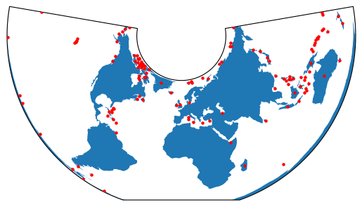
Plotting with CartoPy and GeoPandas
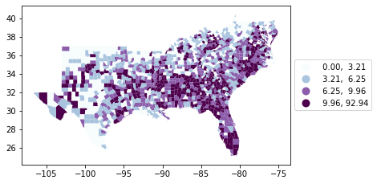
Choro legends
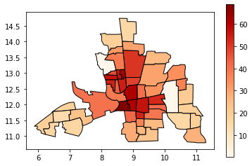
Choropleth classification schemes from PySAL for use with GeoPandas
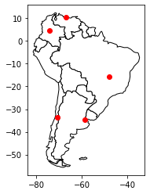
Creating a GeoDataFrame from a DataFrame with coordinates
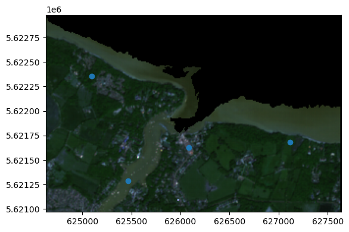
Using GeoPandas with Rasterio to sample point data
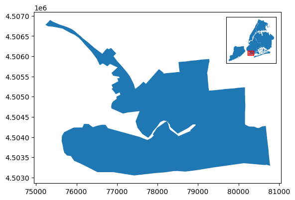
Adding Inset Maps to a Matplotlib Plot

Adding Scale Bars and North Arrows to a Matplotlib Plot
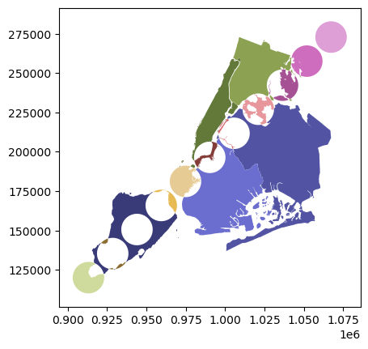
Overlays

Using GeoPandas via the pandas “geo” accessor
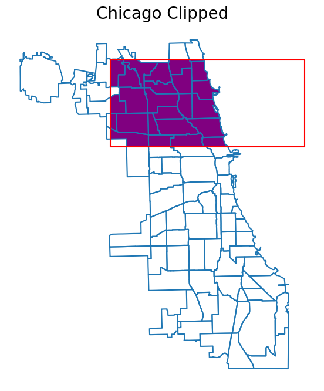
Clip Vector Data with GeoPandas
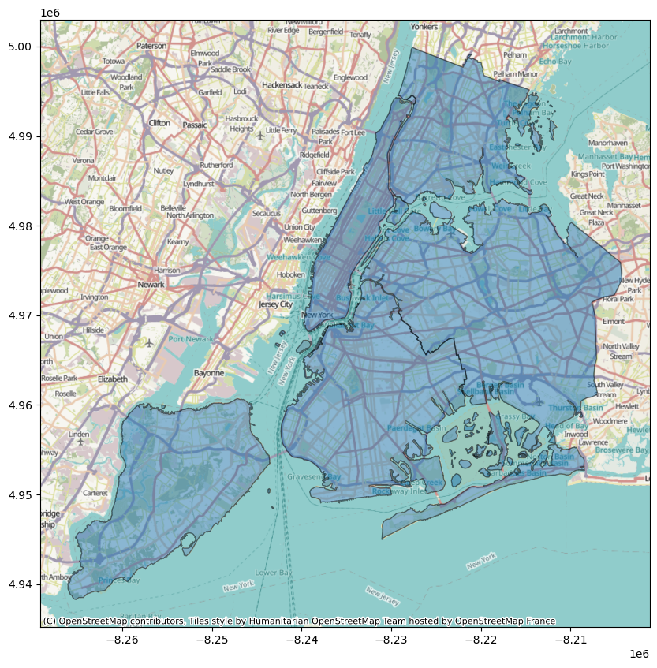
Adding a background map to plots
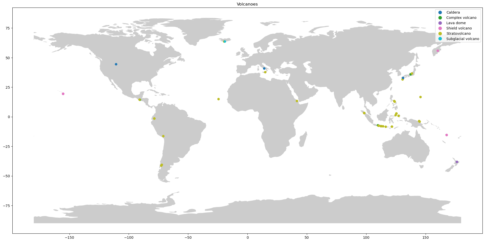
Plotting with Folium
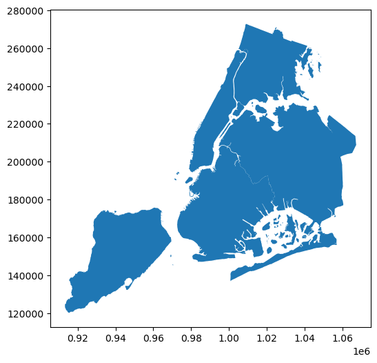
Plotting polygons with Folium
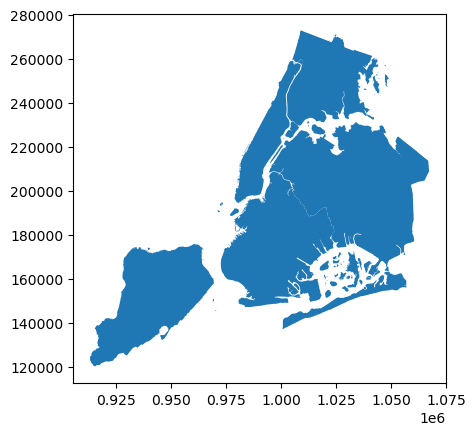
Spatial Joins